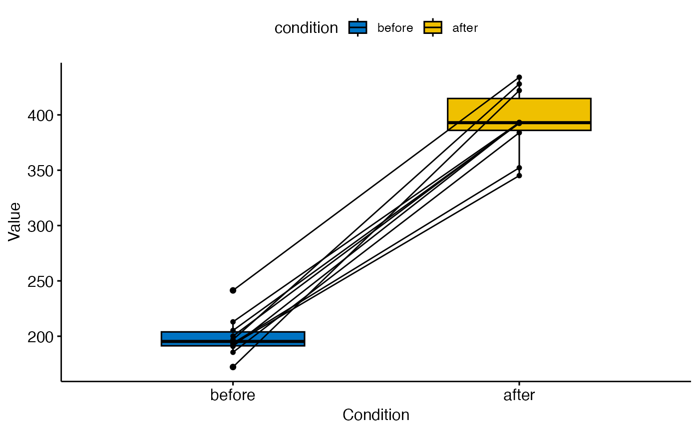
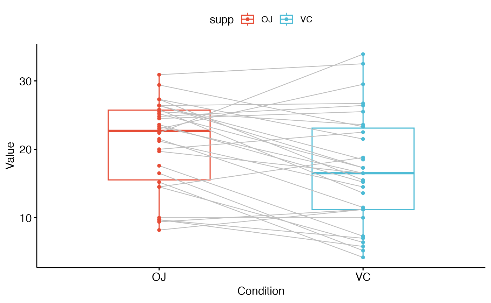

Plot paired data.
Usage
ggpaired(
data,
cond1,
cond2,
x = NULL,
y = NULL,
id = NULL,
color = "black",
fill = "white",
palette = NULL,
width = 0.5,
point.size = 1.2,
line.size = 0.5,
line.color = "black",
linetype = "solid",
title = NULL,
xlab = "Condition",
ylab = "Value",
facet.by = NULL,
panel.labs = NULL,
short.panel.labs = TRUE,
label = NULL,
font.label = list(size = 11, color = "black"),
label.select = NULL,
repel = FALSE,
label.rectangle = FALSE,
ggtheme = theme_pubr(),
...
)Arguments
- data
a data frame
- cond1
variable name corresponding to the first condition.
- cond2
variable name corresponding to the second condition.
- x, y
x and y variables, where x is a grouping variable and y contains values for each group. Considered only when
cond1andcond2are missing.- id
variable name corresponding to paired samples' id. Used to connect paired points with lines.
- color
points and box plot colors. To color by conditions, use color = "condition".
- fill
box plot fill color. To change fill color by conditions, use fill = "condition".
- palette
the color palette to be used for coloring or filling by groups. Allowed values include "grey" for grey color palettes; brewer palettes e.g. "RdBu", "Blues", ...; or custom color palette e.g. c("blue", "red"); and scientific journal palettes from ggsci R package, e.g.: "npg", "aaas", "lancet", "jco", "ucscgb", "uchicago", "simpsons" and "rickandmorty".
- width
box plot width.
- point.size, line.size
point and line size, respectively.
- line.color
line color.
- linetype
line type.
- title
plot main title.
- xlab
character vector specifying x axis labels. Use xlab = FALSE to hide xlab.
- ylab
character vector specifying y axis labels. Use ylab = FALSE to hide ylab.
- facet.by
character vector, of length 1 or 2, specifying grouping variables for faceting the plot into multiple panels. Should be in the data.
- panel.labs
a list of one or two character vectors to modify facet panel labels. For example, panel.labs = list(sex = c("Male", "Female")) specifies the labels for the "sex" variable. For two grouping variables, you can use for example panel.labs = list(sex = c("Male", "Female"), rx = c("Obs", "Lev", "Lev2") ).
- short.panel.labs
logical value. Default is TRUE. If TRUE, create short labels for panels by omitting variable names; in other words panels will be labelled only by variable grouping levels.
- label
the name of the column containing point labels. Can be also a character vector with length = nrow(data).
- font.label
a list which can contain the combination of the following elements: the size (e.g.: 14), the style (e.g.: "plain", "bold", "italic", "bold.italic") and the color (e.g.: "red") of labels. For example font.label = list(size = 14, face = "bold", color ="red"). To specify only the size and the style, use font.label = list(size = 14, face = "plain").
- label.select
can be of two formats:
a character vector specifying some labels to show.
a list containing one or the combination of the following components:
top.upandtop.down: to display the labels of the top up/down points. For example,label.select = list(top.up = 10, top.down = 4).criteria: to filter, for example, by x and y variabes values, use this:label.select = list(criteria = "`y` > 2 & `y` < 5 & `x` %in% c('A', 'B')").
- repel
a logical value, whether to use ggrepel to avoid overplotting text labels or not.
- label.rectangle
logical value. If TRUE, add rectangle underneath the text, making it easier to read.
- ggtheme
function, ggplot2 theme name. Default value is theme_pubr(). Allowed values include ggplot2 official themes: theme_gray(), theme_bw(), theme_minimal(), theme_classic(), theme_void(), ....
- ...
other arguments to be passed to be passed to ggpar().
Examples
# Example 1
# ::::::::::::::::::::::::::::::::::::::::::
before <- c(200.1, 190.9, 192.7, 213, 241.4, 196.9, 172.2, 185.5, 205.2, 193.7)
after <- c(392.9, 393.2, 345.1, 393, 434, 427.9, 422, 383.9, 392.3, 352.2)
d <- data.frame(before = before, after = after)
ggpaired(d,
cond1 = "before", cond2 = "after",
fill = "condition", palette = "jco"
)

# Example 2
# ::::::::::::::::::::::::::::::::::::::::::
ggpaired(ToothGrowth,
x = "supp", y = "len",
color = "supp", line.color = "gray", line.size = 0.4,
palette = "npg"
)
